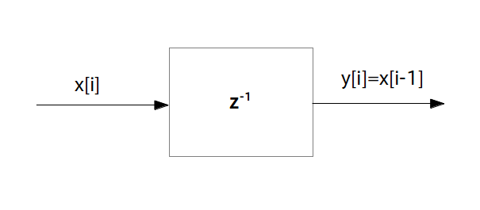

伝達関数 $\textrm{H}(z) = a$(実数) は乗算器を意味し、$a$ を三角で囲む(※)。
※ 四角で囲んでいる文献もあります。

ではいよいよ「伝達関数＝フィルタの内部構造」の意味について説明します。ただしいきなり複雑な伝達関数を使って説明すると訳が分からなくなるので、フィルタを構成する基本パーツの伝達関数と、それに対応するプロック図・プログラミング表現の話から順を追って説明して行きたいと思います。
さて前のページではフィルタそのもののブロック図を示しましたが、フィルタ自体はもっと細かい
「乗算器」「遅延素子」「加算器」
と呼ばれる 3 つの基本パーツを組み合わせて出来ています。これら基本パーツのうち「乗算器」「遅延素子」はフィルタの一種なので伝達関数を持っています。
$\textrm{H}(z) = a$(実数)
という伝達関数を持つフィルタは「乗算器」と呼ばれる基本パーツになります。乗算器に $x[i]$ を入力すると出力は
$y[i] = a \cdot x[i]$
の様に入力が $a$ 倍されて出てきます。ブロック図は次の通りです。
伝達関数 $\textrm{H}(z) = a$(実数) は乗算器を意味し、$a$ を三角で囲む(※)。
※ 四角で囲んでいる文献もあります。
また乗算器を C 言語でプログラミングする時は次のように書きます。
y[i] = a * x[i]
なお乗算器の伝達関数が $\textrm{H}(z) = a$ となる理由は次のように証明されます。伝達関数の定義は 2 つありましたので両方のやり方を示します。
(定義1を使った証明)
乗算器
\begin{align*} y[i] = a\cdot x[i] \end{align*}にディジタルインパルス信号 $\delta[i] = \{1,0,0,\cdots\}$ を入力した時のインパルス応答は $h[i] = \{a,0,0,\cdots\}$ なので、それを Z 変換すると $\textrm{H}(z) = a$ が得られる(証明終)
(定義2を使った証明)
入力信号 $x[i]$ の Z 変換を $\textrm{X}(z)$、出力信号 $y[i]$ の Z 変換を $\textrm{Y}(z)$ とする。乗算器の式である
\begin{align*} y[i] = a\cdot x[i] \end{align*}の両辺を Z 変換すると
\begin{align*} \textrm{Y}(z) = a\cdot \textrm{X}(z) \end{align*}となるが、両辺を $\textrm{X}(z)$ で割ると伝達関数の定義より
\begin{align*} \frac{\textrm{Y}(z)}{\textrm{X}(z)} = \textrm{H}(z) = a \end{align*}となる(証明終)。
$\textrm{H}(z) = z^{-1}$
という伝達関数を持つフィルタは「(1 時刻)遅延素子」と呼ばれる基本パーツになります。遅延素子に $x[i]$ を入力すると出力は
$y[i] = x[i-1]$
の様に 1 時刻前の入力が遅れて出てきます。ブロック図は次の通りです。
伝達関数 $\textrm{H}(z) = z^{-1}$ は遅延素子を意味し、$z^{-1}$ を四角で囲む。
また遅延素子を C 言語でプログラミングする時は次のように書きます。
y[i] = x[i-1]
なお遅延素子の伝達関数が $\textrm{H}(z) = z^{-1}$ となる理由は次のように証明されます。伝達関数の定義は 2 つありましたので両方のやり方を示します。
(定義1を使った証明)
遅延素子
\begin{align*} y[i] = x[i-1] \end{align*}にディジタルインパルス信号 $\delta[i] = \{1,0,0,\cdots\}$ を入力した時のインパルス応答は $h[i] = \{0,1,0,\cdots\}$ なので、それを Z 変換すると $\textrm{H}(z) = z^{-1}$ が得られる(証明終)
(定義2を使った証明)
入力信号 $x[i]$ の Z 変換を $\textrm{X}(z)$、出力信号 $y[i]$ の Z 変換を $\textrm{Y}(z)$ とする。遅延素子の式である
\begin{align*} y[i] = x[i-1] \end{align*}の両辺を Z 変換すると
\begin{align*} \textrm{Y}(z) &= \sum_{i=0}^{\infty} \{ x[i-1] \cdot z^{-i} \} \\ &= \left [ \sum_{i=0}^{\infty} \{ x[i-1] \cdot z^{-(i-1)} \} \right ] \cdot z^{-1} \end{align*}ここで $i'=i-1$ と置くと
\begin{align*} \textrm{Y}(z) = \left [ \sum_{i'=-1}^{\infty} \{ x[i'] \cdot z^{-i'} \} \right ] \cdot z^{-1} \end{align*}となるが、$x[-1] = 0$ なので
\begin{align*} \textrm{Y}(z) = \left [ \sum_{i'=0}^{\infty} \{ x[i'] \cdot z^{-i'} \} \right ] \cdot z^{-1} \end{align*}となる。再び $i'$ を $i$ に置き換えると
\begin{align*} \textrm{Y}(z) &= \left [ \sum_{i=0}^{\infty} \{ x[i] \cdot z^{-i} \} \right ] \cdot z^{-1} \\ &= \textrm{X}(z) \cdot z^{-1} \\ \end{align*}となるので、後は両辺を $\textrm{X}(z)$ で割ると伝達関数の定義より
\begin{align*} \frac{\textrm{Y}(z)}{\textrm{X}(z)} = \textrm{H}(z) = z^{-1} \end{align*}となる(証明終)。
$x_0[i]$ から $x_{\textrm{L}-1}[i]$ まで計 $\textrm{L}$ 個の入力信号があるとき、それらを足しあわせて
\begin{align*} y[i] = \sum_{j=0}^{\textrm{L}-1} x_j[i] \end{align*}を出力する装置を加算器と呼びます。
加算器は厳密に言うと次のページで説明する「並列結合」であり、フィルタでは無いので伝達関数はありませんが、ブロック図は次の様に表されます。
加算器は＋記号を丸で囲む(※)。
※ 四角で囲んでいる文献もあります。また＋ではなくて SUM や Σ を使う場合もあります。

また可算器を C 言語でプログラミングする時は次のように書きます。
x[j][i] を j 番目の入力信号の時刻 i における値とすると
y[i] = 0; for( j = 0; j < L; ++j ) y[i] += x[j][i]